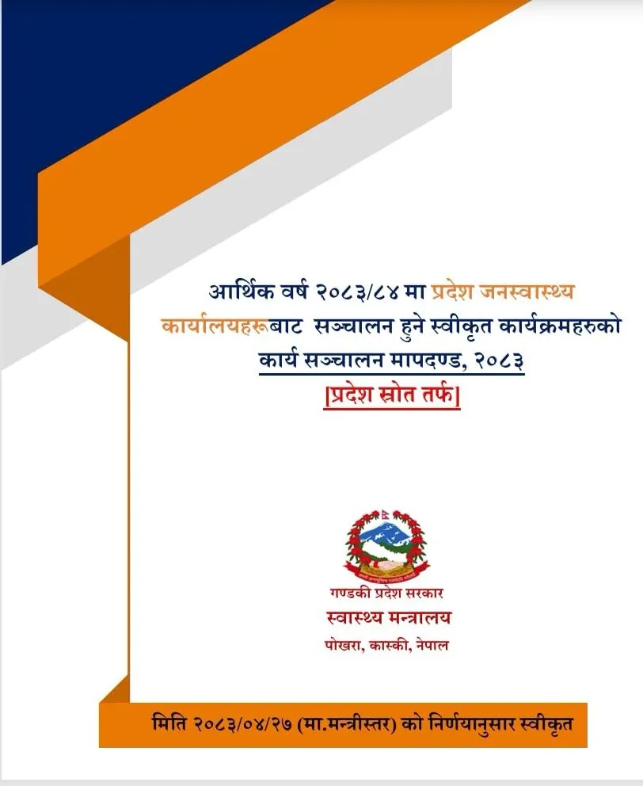
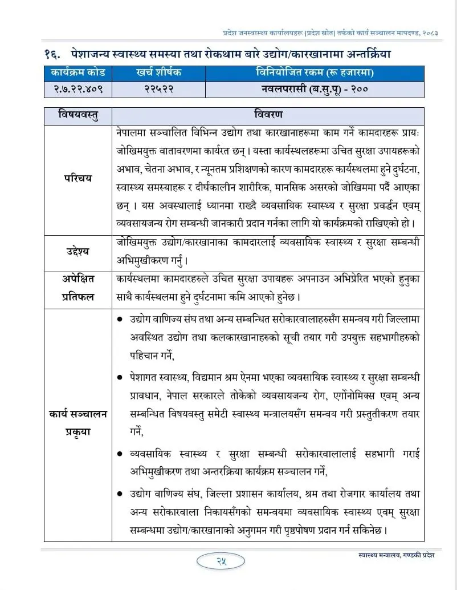

During the Annual Workplan Planning Budgeting (AWPB) discussions for the fiscal year 2082/83, our team at the Province Public Health Office, Nawalparasi (East of Bardaghat Susta), a governmental body working at the district level under the Ministry of Health, Gandaki Province, proposed Occupational Health and Safety (OHS) as a new public health priority for the district.
At that time, it was, in many ways, a random thought, but an area we felt deserved greater attention within our public health system. The idea was then subsequently approved for the proposed fiscal year by the Ministry of Health, Gandaki Province, and the program was successfully implemented in the district, with me serving as the focal person.

And as of now, 07 September, 2026, what makes me even happier is that the Occupational Health and Safety program (the same one proposed last year and approved) has now been continued as an approved annual program for the fiscal year 2083/84 in our district. For me, this continuity is more than just another program in the annual plan; beyond this, it is an encouraging recognition that an idea from the field can find its place within the public health system.
But Could We Have Gone One Step Further?
This continuity also makes me reflect.
"If an intervention is considered important enough to be introduced, supported, implemented, and continued in one district, perhaps we should also ask: Could the experience be taken beyond one district? Could it become a provincial initiative?"
— Reflection on Scaling District InnovationsI genuinely wish the program planners and concerned authorities had also considered the possibility of expanding Occupational Health and Safety interventions/program to other districts of the Gandaki Province this year.
For me, not every innovation needs to begin province-wide, but sometimes, an idea can start in one district, generate experience and evidence, demonstrate its relevance, and then can grow into a broader system-level intervention.
The Bigger Success I Wished and Am Still Looking Forward To
For me, the real success of this initiative will not only be its continuation in our district.
Its greater success would be to see Occupational Health and Safety recognized as a public health priority across the province, reaching workers and communities who may otherwise remain outside the focus of conventional public health interventions.

Reaching Unserved Workers
Bringing dedicated health and safety standards to communities outside standard public health focus areas.
Perhaps this is also a reminder for all of us working in public health: When a new idea emerges from the field, we should not only ask whether it works but also where else it could work.
For now, I remain genuinely grateful and proud that the program has been approved for continuation this year as well. It means a lot to see that what once began as a simple, almost random idea has now become a continuing program, and through it, I have had the opportunity to reach hundreds of people for a meaningful public health purpose.
Small Ideas, Stronger Possibilities
Field experience combined with institutional support creates sustainable health priorities for workers across communities.